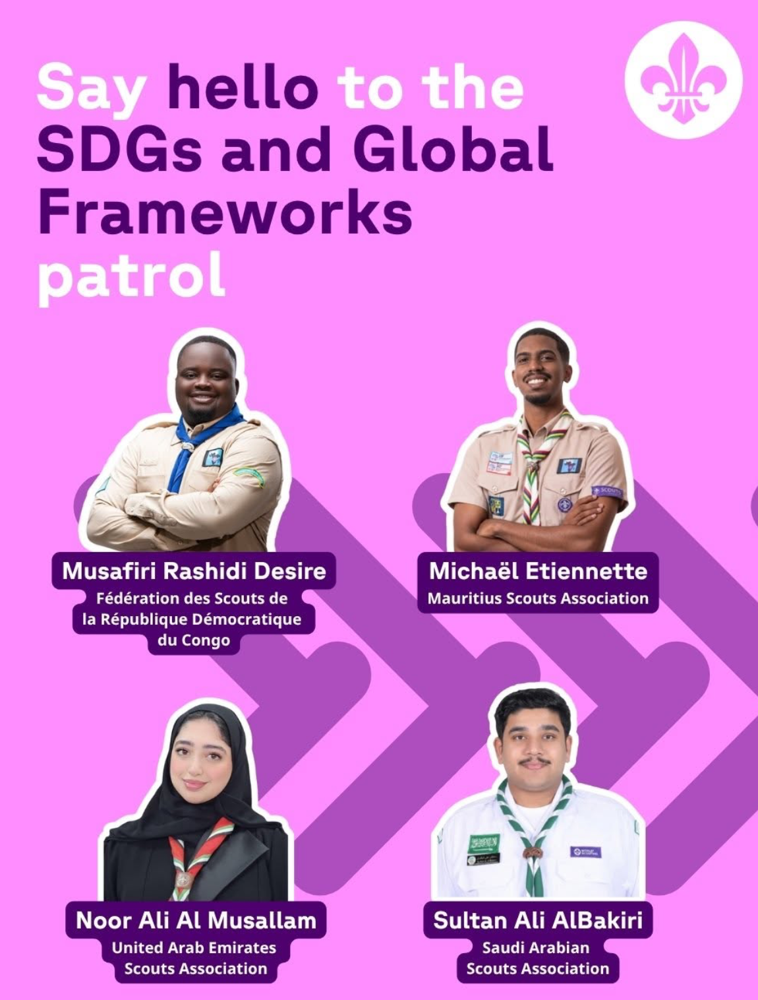
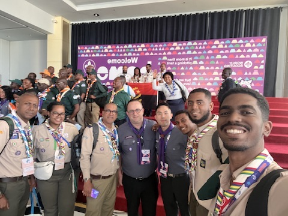

Chronological journey
Seven stages, one continuous story
Expand each stage to see the responsibilities, achievements and reflections that shaped it.
Cub Scout
The first stage+
Cub Scout
The joy of belonging and the basics of teamwork and service.
Caring for my Six, learning the Scout promise and law.
Earned early badges and built lasting friendships.
This is where curiosity turned into commitment.
Scout
Building skills+
Scout
Practical skills, resilience and working within a patrol.
Patrol duties, camp preparation and peer support.
Progressive badge work and camp leadership roles.
Learning to lead by example among my peers.
Venture Scout
Taking initiative+
Venture Scout
Planning and running activities independently.
Leading projects and mentoring younger Scouts.
Self-led expeditions and community projects.
Discovered a passion for organising and advocacy.
Adult Leader
Mentoring+
Adult Leader
Safeguarding, programme delivery and adult support.
Helped in Running a section and developing young people safely.
Strengthened programme quality and retention.
The responsibility of shaping others' experiences.
District Youth Scout Council President
Governance+
District Youth Scout Council President
2 years as DYSC of Port Louis President
Leading the DYSC and championing youth voice.
Launched forums and district-wide youth initiatives.
Institutions matter — they make participation durable.
Africa Region Youth Representative
The current chapter+
Africa Region Youth Representative
Works closely with the Africa Region leadership to drive youth engagement and development.
Represents youth and scouting at the global level.
Africa Scout Conference and Africa Scout Youth Forum
SDGs and Global Frameworks

